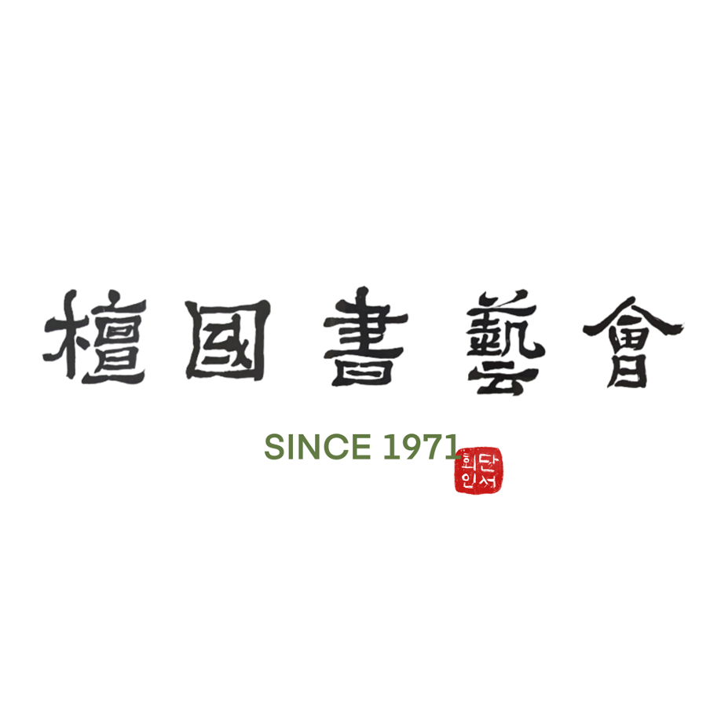

문화생활을 만끽하는 어스인
▶ 영화예술연구회 ◀
영화예술을 통한 대학문화의 질적 수준 향상을 기하고 국민 문화 예술 기여
▶ 극예술연구회 ◀
안녕하세요. 단국대학교 연극동아리 극예술연구회는 현재 60주년을 앞둔 전통있는 단대 극예술연구회는 선후배 상관없이 연극을 만드는 동아리입니다.
연기가 하고 싶은 사람들, 연기가 좋은 사람들, 사람이 좋은 사람들, 공연이 좋은 사람들 모두가 한 자리에 모여 2달 가량의 기간동안 작품을 만드는 것을 목표로 하고 있습니다.
▶ 사진예술연구회 ◀
사진예술활동에 그 근본을 두며 회원 단합 및 친선도모를 목적
▶ 글그림 ◀
[죽전] 중앙 문예창작&서브컬쳐(만화, 게임, 애니 등) 동아리 글그림
죽전캠퍼스 중앙동아리 소속 문예창작&서브컬쳐(만화, 게임, 애니 등) 동아리 글그림입니다.
2024년 1학기 신입 부원을 모집합니다. 신규 부원은 상시 모집하고 있으니 편하게 문의해주세요.
🐈 모집 대상
같은 취미를 공유하고자 하는 분들 누구나!
애니메이션, 게임, 판타지 등 다양한 장르의 연재 소설, TRPG 등등. 동아리 특성상 앞의 나열된 서브컬쳐 장르를 좋아하는 부원들이 매우 많습니다. 함께 취미를 공유하고 싶으신 분들은 언제나 환영합니다.
🐈 활동 내용
저희 동아리는 1년 활동이 크게 세 가지로 나뉘어집니다.
🐹 감상부
감상부는 영화나 행사 등에 다 함께 모여서 보러 가거나 참여하는 활동을 합니다. 그렇다고 꼭 감상부만 활동에 참여할 수 있는 것이 아니라 모든 동아리 부원들이 자유롭게 선택하여 활동에 참여할 수 있고, 감상부여도 매 활동 참가가 필수는 아니니 부담은 갖지 않으셔도 됩니다.
🔖 영화
마블, 너의 이름은, 지브리 애니메이션 등 처럼 대중적인 영화부터 페이트 시리즈, 원피스 극장판 등 애니메이션 영화도 함께 보러 갑니다.
🔖 행사
플레이 엑스포, 지스타 등등 함께 가고 싶은 행사가 있을 경우 회장이나 감상부장에게 말해주시면 함께 보러 갈 사람들을 모집합니다.
🐹 창작부
시험 2주 전을 제외한 매주 특정 요일에 동아리 방에서 창작 활동을 진행합니다. 손그림을 그리셔도 되고 타블렛이나 아이패드 등 장비가 있으신분들은 장비를 들고와 그림을 그리셔도 됩니다. 주제는 자유롭게 그리기도 하고, 창작부장의 주도하에 단체 작품을 만들기도 합니다. 그림을 잘 그리고 못 그리고는 중요하지 않습니다! 다들 그냥 즐겁게 모여서 그림 그리려고 있는 활동 시간이니 편하게 참여해도 됩니다!
🐹 회지 제작
1년에 단 한번뿐인 동아리 필수 활동입니다. 4학년과 휴학예정자를 제외한 모든 동아리 부원들이 의무적으로 참여하는 활동으로, 투표를 통해 정해진 주제에 대하여 자유롭게 글이나 그림을 창작하여 제출하면 됩니다. 제출된 원고들은 창작부장이 엮어 동아리 회지로 제작하며 회지 참가자들에게는 원할경우 회지가 1부씩 배부됩니다. (동아리 회지 제작에 들어가는 모든 비용은 지원금과 동아리 회비로 진행합니다.) 매년 회지의 주제는 동아리원들의 추천과 투표로 정해집니다!
🐈 가입 신청 및 문의사항
동아리 가입 신청 및 문의 사항은 아래 번호로 연락주세요.
회장 전화번호 010-3326-4139
▶ 단국서예회 ◀
